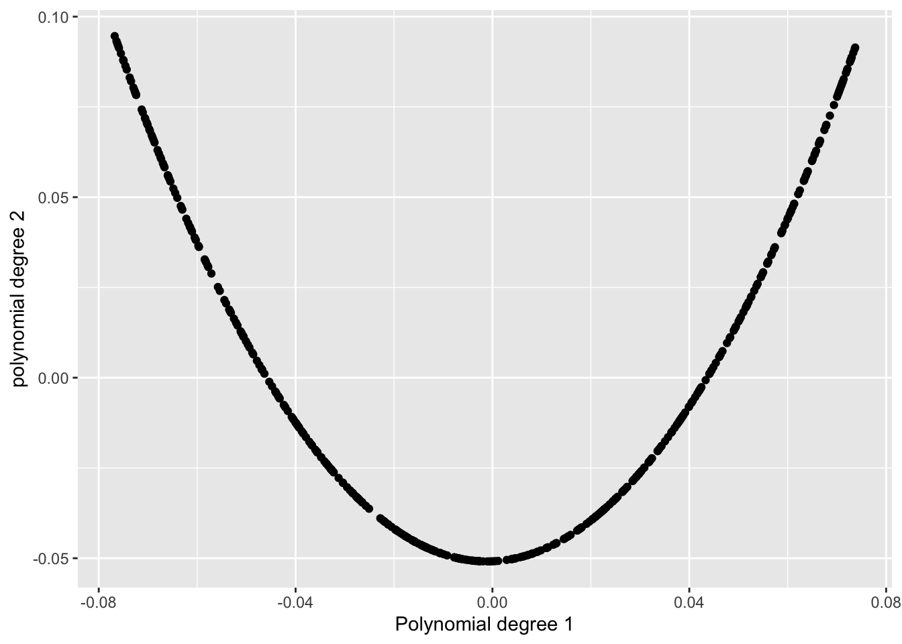
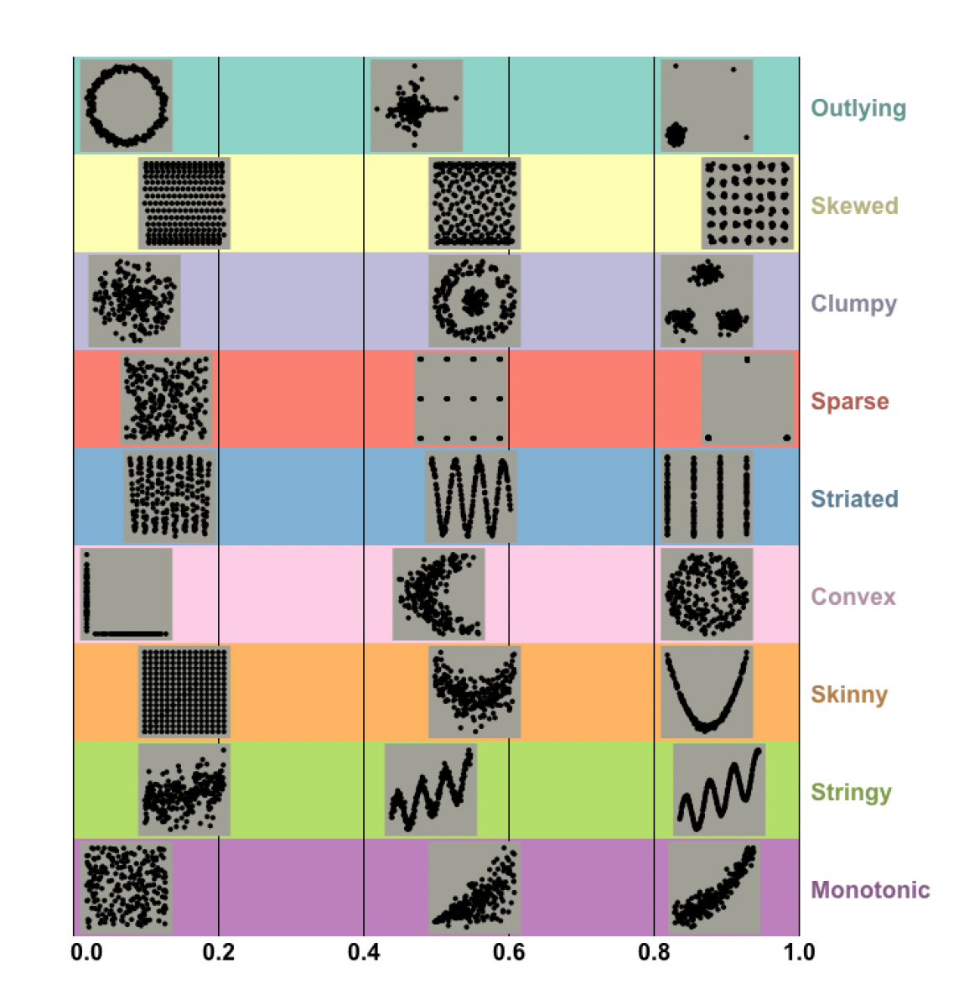
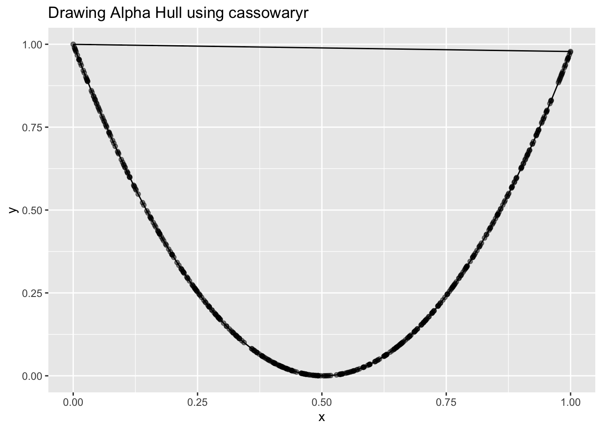

Debugging Alpha Parameter in cassowaryr package
R
Scagnostics
data-viz
In this blog, I’m going to tell you how I came across a problem with the alpha parameter in the cassowaryr package while playing around with shape analysis and scagnostics, and how I figured out what was going wrong and fixed it.

How It Started
I’ve been working on shape analysis, trying to better understand patterns in multivariate data. I’m especially interested in patterns that are weird, thin, curvy, or unexpected, rather than just “normal” or random.
That curiosity led me to scagnostics (scatterplot diagnostics), a powerful set of metrics that help you quantify the shape and structure of scatterplots. Scagnostics go far beyond linear regression fits or clustering, they look for clumps, holes, loops, skew, and in particular, skinny (which is where this story really begins).
To compute these, I used the cassowaryr package in R, which implements scagnostics measures using geometry. I ran some simulations, tried adding noise, and explored how the indices responded.
😕 Wait… That Doesn’t Look Right
After exploring many features with and without noise, I noticed something unexpected with the skinny index.
Scagnostics are supposed to give values between 0 and 1. For skinny, the idea is:
- If a pattern is very thin and elongated, it should be close to 1.
- If it’s round and compact, it should be closer to 0.
So I tested it on a U-shaped pattern:
- A degree-1 polynomial on the x-axis,
- A degree-2 polynomial on the y-axis.
It looked very skinny, and in fact, in Wilkinson’s scagnostics paper, a pattern just like this one is shown as a clear example of something that’s highly skinny.
But when I checked the skinny index, it gave me… 0.17-0.20. 🤨
[1] "The skinny value from cassowaryr is: 0.181707044829051"That didn’t feel right at all. So naturally, I started to wonder: what’s going wrong here?
Time to Dig In
I figured maybe there was something off in how the measure was being calculated. So I began debugging. I read the documentation and looked into how the skinny index was defined how the skinny index was defined. I found that it’s computed as:
\[ \text{Skinny} = 1 - \frac{\sqrt{4 \pi \cdot \text{Area}(A)}}{\text{Perimeter}(A)} \]
Where ( A ) is the alpha shape (also called alpha hull), a geometric boundary that wraps around the data more tightly than a convex hull depending on the alpha parameter. If the shape is long and narrow, this formula should give a value close to 1. If it’s more round or bulky, the result will be closer to 0.
I visualized the alpha shape using cassowaryr. That’s when I saw it: The alpha hull was overly convex, it had connected the two tips of the U shape, effectively turning it into a bowl. So from the geometry’s point of view, it wasn’t skinny anymore, and the formula reflected that.

It looked much rounder than it really was, so of course the skinny value was low!
The shape detection wasn’t wrong, exactly, it was just being too aggressive in how it wrapped the points. And that’s when I realized: this had to do with the alpha parameter.
I opened the source code and looked at how alpha was being calculated.
There, I saw that the alpha parameter was being computed using a boxplot-based outlier rule, the one where you take the interquartile range and multiply it by 1.5 to find upper thresholds. It was using this to define alpha.
This didn’t align with my understanding of scagnostics. So I returned to the original Wilkinson paper, which describes scagnostics in detail.
And there it was, it says: > Alpha is recommended to be the 90th percentile of the Minimum Spanning Tree (MST) edge lengths.
The boxplot rule is supposed to be used to detect and remove outliers, not to determine the alpha shape parameter. This was a mix-up.
What I Changed
So here’s what I did:
- The boxplot rule is now used solely to remove outliers from the data before geometry is computed.
- The alpha parameter is calculated as the 90th percentile of MST edge lengths:
alpha <- quantile(mst_weights, 0.9)The Original scree() Function and How It Was Working Before
#' Pre-processing to generate scagnostic measures
#'
#' @param x,y numeric vectors
#' @param binner an optional function that bins the x and y vectors prior
#' to triangulation
#' @param ... other args
#'
#' @return An object of class "scree" that consists of three elements:
#' - `del`: the Delauney-Voronoi tesselation from [alphahull::delvor()]
#' - `weights`: the lengths of each edge in the Delauney triangulation
#' - `alpha`: the radius or `alpha` value that will be used to generate the
#' alphahull
#'
#' @examples
#'
#' x <- runif(100)
#' y <- runif(100)
#' scree(x,y)
#'
#' @export
scree <- function(x, y, binner = NULL, ...) {
# checks on x,y
stopifnot(
is.numeric(x), is.numeric(y), length(x) == length(y)
)
# Check if data is a straight line
if (any(abs(stats::cor(x,y))>1-1*10^-15, !stats::sd(x)>0, !stats::sd(y)>0))
stop("Data is a perfectly straight line and cannot be analysed")
# Binner must be a function
if (!(is.null(binner) | is.function(binner)))
stop("binner must be a function")
# cast to a matrix
xy <- cbind(unitize(x), unitize(y))
# Check for duplicates and remove
# (had to cut off at 15 digits otherwise shull spits error)
xrnd <- round(unitize(x), digits = 10)
yrnd <- round(unitize(y), digits = 10)
dupes <- paste(xrnd, yrnd, sep =",")
xy <- xy[!duplicated(dupes),]
# Binner function
if (is.function(binner)) {
xy <- binner(xy)
}
# compute delauney triangulation
del <- alphahull::delvor(xy)
# edge weights from the triangulation
weights <- gen_edge_lengths(del)
# alpha estimator
alpha <- psi(weights)
structure(
list(
del = del,
weights = weights,
alpha = alpha
),
class = "scree"
)
}
gen_edge_lengths <- function(del) {
from_cols <- c("x1", "y1")
to_cols <- c("x2", "y2")
sqrt(rowSums((del$mesh[, from_cols] - del$mesh[, to_cols])^2))
}
# rescale input to lie in unit interval
unitize <- function(x, na.rm = TRUE) {
rng <- range(x, na.rm = na.rm)
(x - rng[1]) / diff(rng)
}
# This is the edge filter from Wilkinson 05
psi <- function(w, q = c(0.25, 0.75)) {
q <- stats::quantile(w, probs = q)
unname(q[2] + 1.5 * diff(q))
}The Updated scree(), How I Fixed the Alpha Problem
scree <- function(x, y, binner = NULL, alpha_param = NULL, ...) {
# checks on x,y
stopifnot(
is.numeric(x), is.numeric(y), length(x) == length(y)
)
# Check if data is a straight line
if (any(abs(stats::cor(x, y)) > 1 - 1e-15, !stats::sd(x) > 0, !stats::sd(y) > 0))
stop("Data is a perfectly straight line and cannot be analysed")
# Binner must be a function
if (!(is.null(binner) | is.function(binner)))
stop("binner must be a function")
# cast to a matrix
xy <- cbind(unitize(x), unitize(y))
# Check for duplicates and remove
xrnd <- round(unitize(x), digits = 10)
yrnd <- round(unitize(y), digits = 10)
dupes <- paste(xrnd, yrnd, sep = ",")
xy <- xy[!duplicated(dupes), ]
# Binner function
if (is.function(binner)) {
xy <- binner(xy)
}
# Compute Delaunay triangulation
del <- alphahull::delvor(xy)
# edge weights from the triangulation
weights <- gen_edge_lengths(del)
# Compute outlier removal threshold (Wilkinson’s boxplot rule)
outlier_threshold <- outlier_rm(weights)
# Compute alpha radius if not provided (Wilkinson’s suggestion: 90th percentile of MST edge lengths)
if (is.null(alpha_param)) {
alpha <- stats::quantile(mst_weights, 0.9)
} else {
alpha <- alpha_param
}
structure(
list(
del = del,
weights = weights,
alpha = alpha,
outlier_threshold = outlier_threshold
),
class = "scree"
)
}
# renamed from psi()
outlier_rm <- function(w, q = c(0.25, 0.75)) {
q <- stats::quantile(w, probs = q)
unname(q[2] + 1.5 * diff(q))
}
gen_edge_lengths <- function(del) {
from_cols <- c("x1", "y1")
to_cols <- c("x2", "y2")
sqrt(rowSums((del$mesh[, from_cols] - del$mesh[, to_cols])^2))
}
# rescale input to lie in unit interval
unitize <- function(x, na.rm = TRUE) {
rng <- range(x, na.rm = na.rm)
(x - rng[1]) / diff(rng)
}